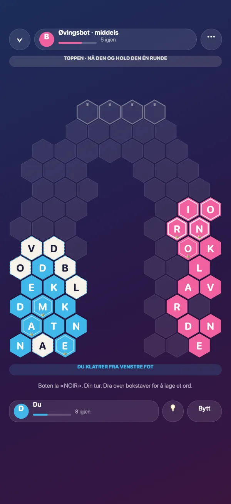
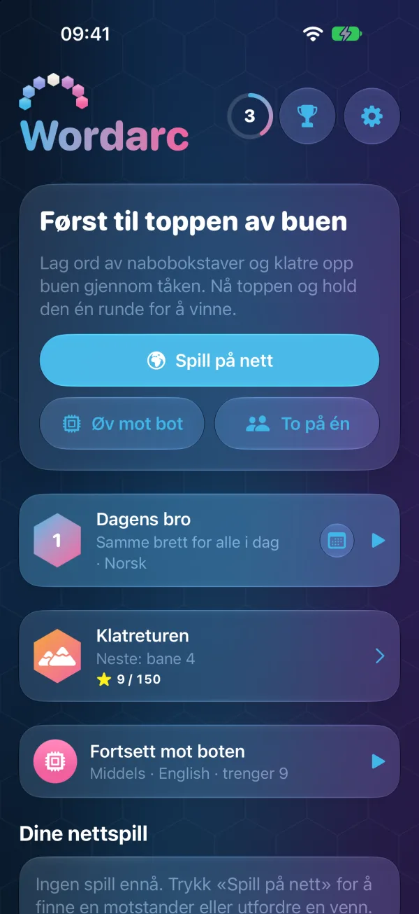
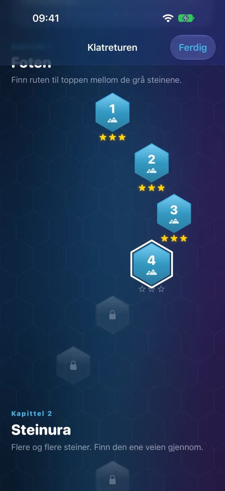

Bygg broen
med ord
Et ordspill for to. Lag ord av nabobokstaver, klatre opp buen gjennom tåken og nå toppen før motstanderen.
Last ned på App StoreGratis · For iPhone · iOS 26 · Spill på norsk eller engelsk · Android





Slik spiller du
Lært på et minutt. Vanskelig å legge fra seg.
Mange måter å spille på
Utfordre en venn, møt hele verden, eller ta Klatreturen alene.
På nett
Spill mot venner eller en tilfeldig motstander via Game Center. Ta trekket ditt når det passer, og få beskjed når det er din tur.
Dagens bro
Samme brett for alle, hver dag. Nå toppen på færrest mulig trekk og hold rekka di i live.
Klatreturen
70 håndlagde baner i åtte kapitler, de første 20 gratis. Finn veien mellom steinene, kappløp mot boten og knus broen dens. Opptil tre stjerner på hver.
Øv mot boten
Tre nivåer, fra vennlig til knallhard. Perfekt for å lære brettet før du møter folk.
To på én
To spillere, én iPhone. Send den over etter hvert ord.
Hva betyr det?
Trykk på et ord som er lagt for å se hva det betyr. Lær et nytt ord hver runde.
Din reise
Samle XP, gå opp i nivå og lås opp nye brikker og rammer mens du spiller.
Norsk og engelsk
Velg brettspråk for hvert spill, uavhengig av appspråket. Store ordlister på begge.
Wordarc Pluss
Wordarc er gratis og uten reklame. Liker du det, gir Pluss deg mer, for én enkelt betaling.
Gratis
- Opptil 5 nettspill samtidig
- Dagens bro hver dag
- De første 20 banene i Klatreturen
- Lett og middels bot, ett gratis tips per spill, to på én
- Ordforklaringer, XP og nivåbelønninger
Pluss
- Ubegrenset med nettspill
- Hele Klatreturen (bane 21–70)
- Vanskelig bot (øving og Klatreturen)
- Tips når du trenger det mot boten (aldri mot folk)
- Statistikk og full spillhistorikk
- Arkiv med tidligere Dagens bro
- Fargetemaer, eksklusive brikker og rammer